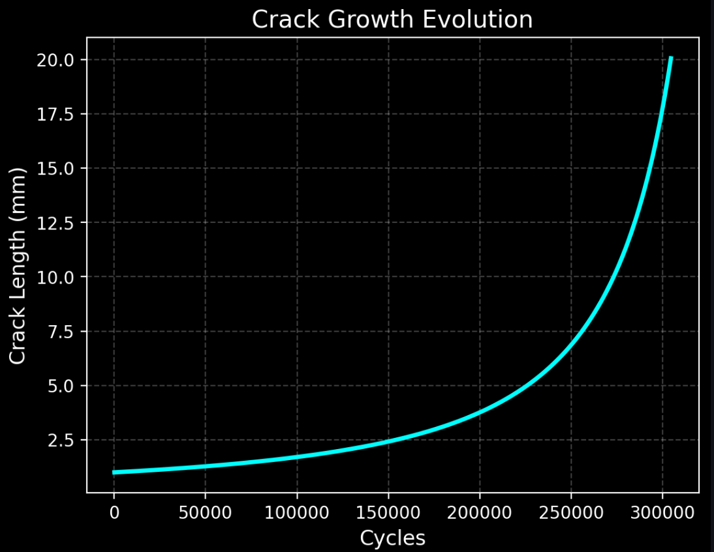
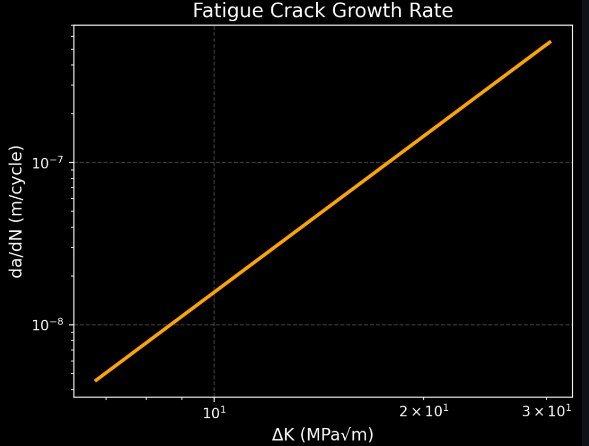
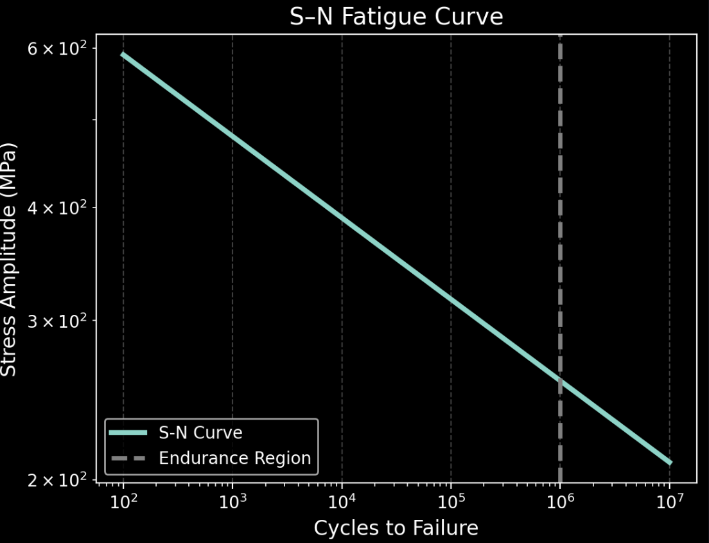
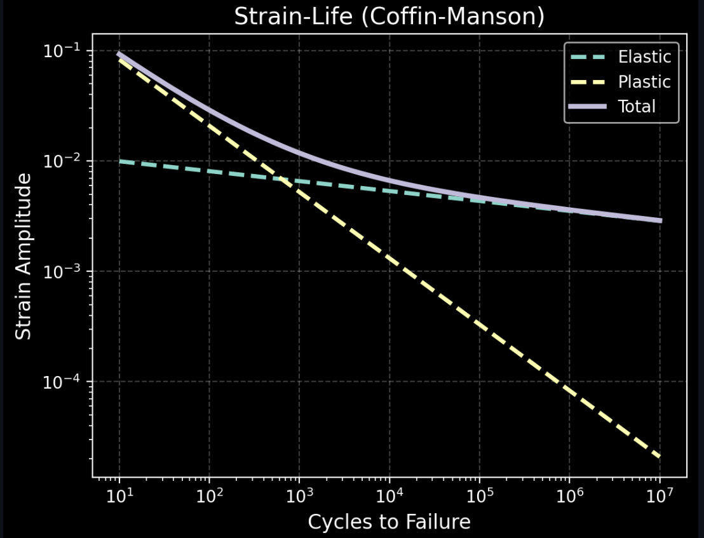
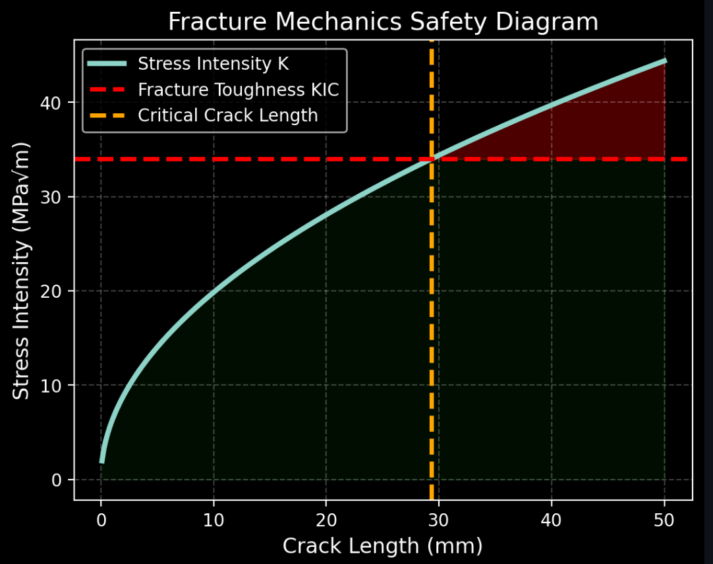
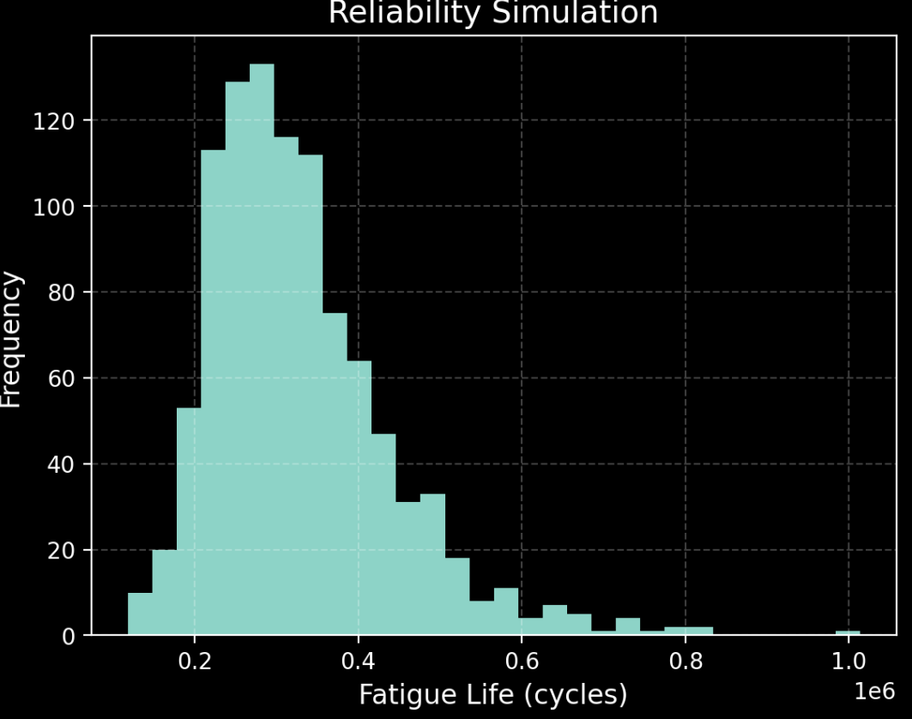
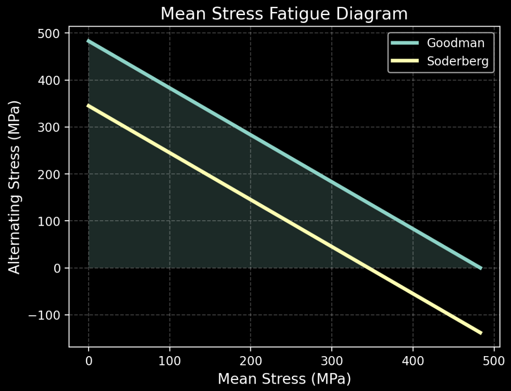
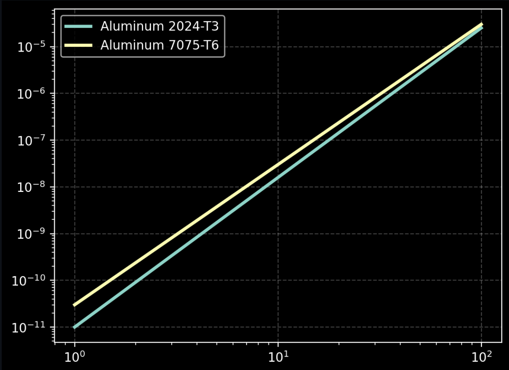

Aerospace Engineer | Structural Integrity | Fatigue & Fracture Mechanics
MS Aerospace Engineering student at Auburn University specializing in fatigue, fracture mechanics, and structural integrity. I develop engineering tools to model crack growth, composite behavior, and material failure in real-world systems.
Developed a Python-based structural integrity toolkit for fatigue life prediction, crack growth simulation, and reliability analysis using Paris, Walker, and Forman models.
Covers full fatigue workflow: crack initiation → propagation → failure → reliability.

Crack growth evolution showing nonlinear propagation to failure.

Fatigue crack growth rate (da/dN vs ΔK) following Paris Law.

S-N fatigue curve illustrating stress-life behavior.

Strain-life (Coffin-Manson) capturing elastic and plastic regimes.

Stress intensity factor vs crack length with critical crack prediction.

Monte Carlo simulation showing fatigue life distribution.

Mean stress correction using Goodman and Soderberg criteria.

Material comparison illustrating fatigue performance differences.